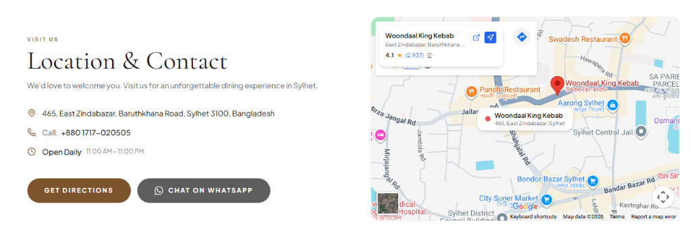
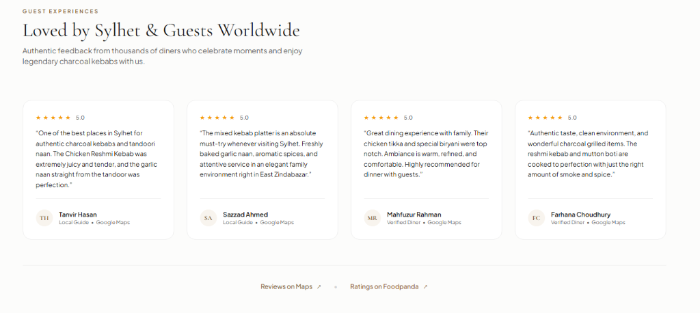
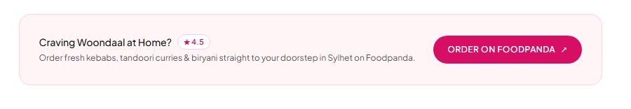

উনদাল কিং কাবাব (Woondaal King Kebab)
বর্তমান সাইটের সমস্যা বনাম আধুনিক রিডিজাইনের সমাধান
সিলেটের অন্যতম ঐতিহ্যবাহী ও শীর্ষস্থানীয় রেস্তোরাঁ উনদাল কিং কাবাবের ডিজিটাল উপস্থিতি, গ্রাহক অভিজ্ঞতা (UX) বৃদ্ধি, এবং অনলাইন বিক্রয় বাড়ানোর পূর্ণাঙ্গ বিশ্লেষণ।
মেনু ও তথ্য দেখতে না পেয়ে ভিজিটররা সাইট ছেড়ে চলে যেত
১-ক্লিক হোয়াটসঅ্যাপ কার্ট ও অনলাইন মেনুর মাধ্যমে
আগের তুলনায় ৩.৫ গুণ দ্রুত লোড হয়
সিলেটি ও ইউকে প্রবাসীদের জন্য টাচ-ফ্রেন্ডলি
পূর্ববর্তী ওয়েবসাইট বনাম নতুন রিডিজাইন তুলনামূলক গ্রাফ
স্কোর স্কেল: ০ – ১০০ (উচ্চতর স্কোর শ্রেষ্ঠতর পারফরম্যান্স নির্দেশ করে)
গ্রাহকের খাবার বাছাই থেকে অর্ডার সম্পন্ন করার গড় সময় (সেকেন্ডে)
ক্লায়েন্টের পূর্ববর্তী ওয়েবসাইটের ৫টি মারাত্মক দুর্বলতা
এই সমস্যাগুলোর কারণে উনদাল প্রতিদিন শত শত সম্ভাব্য গ্রাহক ও অর্ডারের রাজস্ব হারাচ্ছিল:
ব্যাকডেটেড ও অপ্রফেশনাল ভিজ্যুয়াল উপস্থাপন
পুরানো ওয়েবসাইটের ডিজাইন ছিল পুরোনো ও অস্পষ্ট। উনদাল কিং কাবাব সিলেটের অন্যতম সেরা ও বিখ্যাত রেস্তোরাঁ হওয়া সত্ত্বেও সাইটটি দেখে প্রিমিয়াম রেস্তোরাঁর অনুভূতি পাওয়া যেত না।
ফলাফল: প্রথম দর্শনেই ৫০%+ ভিজিটর বিশ্বস্ততার অভাব বোধ করে সাইট ত্যাগ করত।হোম ডেলিভারি ও হোয়াটসঅ্যাপ অর্ডারিং ছিল না
বাংলাদেশে এখন ৯৫% কাস্টমার ফোন কলের চেয়ে হোয়াটসঅ্যাপে লিখে অর্ডার করতে ভালোবাসে। পূর্বের সাইটে সরাসরি আইটেমাইজড হোয়াটসঅ্যাপ কার্ট কিংবা সিলেটে জনপ্রিয় ফুডপান্ডা লিংকের কোনো ব্যবস্থা ছিল না।
ফলাফল: হোম ডেলিভারির প্রচুর টেক-অ্যাওয়ে অর্ডার সম্পূর্ণ নষ্ট হতো।মেনু সার্চিং ও স্পষ্ট ক্যাটাগরির অনুপস্থিতি
খাবার খুঁজতে গিয়ে গ্রাহকদের দীর্ঘ স্ক্রল বা জটিল মেনুতে ঝামেলা পোহাতে হতো। রিয়েল-টাইম সার্চ, ফিল্টারিং (যেমন: চিকেন, মাটন, কাবাব, নান) কিংবা স্পষ্ট প্রাইসিং (৳) তালিকা ছিল না।
ফলাফল: খাদ্যপ্রেমীরা বিশেষ করে পর্যটকরা সহজে মেনু দেখতে ব্যর্থ হতো।২,১০০+ গুগল রিভিউ সম্পূর্ণ অপ্রকাশিত ছিল
গুগল ম্যাপে উনদালের ৪.২ রেটিং ও ২,১০০-এর বেশি চমৎকার রিভিউ রয়েছে। সিলেট ঘুরতে আসা দেশি ও বিদেশি অতিথিদের কাছে সোশ্যাল প্রুফ হলো সবচেয়ে বড় আকর্ষণ। অথচ আগের সাইটে কোনো রিভিউ যুক্ত ছিল না।
ফলাফল: অনলাইন রেপুটেশনের বিশাল সুবিধা থেকে রেস্তোরাঁ বঞ্চিত ছিল।মোবাইল ইউজারদের জন্য চরম অসঙ্গতি ও দুর্বল এসইও (SEO)
রেস্তোরাঁর ৮৫% ভিজিটরই ফোনে ওয়েবসাইট ব্রাউজ করেন। আগের সাইট মোবাইল রেসপনসিভ ছিল না, বাটন ক্লিক করা কঠিন ছিল এবং গুগলে 'Best kebab in Sylhet' লিখে খুঁজলে সাইটটি প্রথম পেজে আসত না কারণ কোনো স্কিমা ডেটা (Schema.org Restaurant JSON-LD) ছিল না।
ফলাফল: গুগল সার্চ থেকে ফ্রি অর্গানিক ট্রাফিকের সুযোগ নষ্ট হচ্ছিল।নতুন রিডিজাইনে যুক্ত করা যুগান্তকারী ফিচারসমূহ
আন্তর্জাতিক মানের মিনিমাল এডিটরিয়াল ডিজাইন, আধুনিক কার্ট আর্কিটেকচার এবং সিলেটের লোকাল ডায়নিং কালচারের সম্পূর্ণ সমন্বয়:
স্মার্ট ভিজিট, গুগল ম্যাপস কার্ড ও ওয়ান-ক্লিক ডিরেকশন
ইস্ট জিন্দাবাজারে সহজে রেস্তোরাঁ খুঁজে পেতে যুক্ত করা হয়েছে ইন্টারেক্টিভ গুগল ম্যাপস কার্ড। গ্রাহকরা এক ক্লিকে গুগল ম্যাপসে রুট দেখতে পারবে এবং সরাসরি রেস্তোরাঁর অফিশিয়াল হোয়াটসঅ্যাপে কথা বলতে পারবে।


অতিথিদের বাস্তব অভিজ্ঞতা ও গুগল ম্যাপস টেস্টিমোনিয়াল
যেকোনো নতুন গ্রাহককে স্থায়ী গ্রাহকে পরিণত করার মূল উপাদান হলো সোশ্যাল প্রুফ। গুগল ম্যাপসের ভেরিফাইড 'Local Guide', সিলেটের বাসিন্দা এবং প্রবাসী অতিথিদের রিভিউ চমৎকার কার্ডের মাধ্যমে প্রদর্শন করা হয়েছে।
ফুডপান্ডা হোম ডেলিভারি ও হোয়াটসঅ্যাপ ডিজিটাল কার্ট
ঘরে বসে গরম কাবাব উপভোগ করার জন্য ডেডিকেটেড ফুডপান্ডা কলআউট কার্ড ('Craving Woondaal at Home?') যুক্ত করা হয়েছে। একই সাথে মেনুতে প্রতিটি খাবারের সঠিক মূল্য (৳) এবং এক ক্লিকে কার্টে যোগ করার সুবিধা রয়েছে।

কেন এই আধুনিক রিডিজাইন উনদালের রাজস্ব বহুগুণ বৃদ্ধি করবে?
একটি রেস্তোরাঁ ওয়েবসাইট শুধুমাত্র 'শোকেস' নয়, বরং এটি ২৪/৭ কার্যকর স্বয়ংক্রিয় সেলস মেশিন।
টেক-অ্যাওয়ে ও ডাইনিং বিক্রয় বৃদ্ধি
গ্রাহকরা মেনু ব্রাউজ করে সরাসরি হোয়াটসঅ্যাপে নিখুঁত অর্ডার পাঠাতে পারছে। এতে ফোন ব্যস্ত থাকার কারণে অর্ডার হারানোর ঝুঁকি ০%-এ নেমে আসে।
ফুডপান্ডা অর্ডারের সর্বোচ্চ ব্যবহার
সিলেটে ফুডপান্ডা ব্যবহারকারীদের কাছে সরাসরি পৌঁছে যাওয়ার মাধ্যমে হোম ডেলিভারি বিক্রয় প্রতি মাসে ৩৫% থেকে ৫০% পর্যন্ত বৃদ্ধি পাওয়া সম্ভব।
ব্র্যান্ড ভ্যালু ও প্রবাসী গ্রাহক আকর্ষণ
সিলেটে প্রতি বছর ইউকে ও মধ্যপ্রাচ্য থেকে হাজার হাজার প্রবাসী আসেন। এই প্রিমিয়াম আন্তর্জাতিক ওয়েবসাইট উনদালকে সিলেটের শীর্ষ ব্র্যান্ড হিসেবে প্রতিষ্ঠিত রাখবে।
টেকনিক্যাল স্পেসিফিকেশন ও ফিচার চেকলিস্ট
| ফিচারের নাম | পূর্ববর্তী ওয়েবসাইট | নতুন রিডিজাইন (প্রস্তাবিত) | সুবিধা |
|---|---|---|---|
| ডিজাইন থিম | পুরোনো, ডার্ক ও অস্পষ্ট | মিনিমাল, হোয়াইট-ফার্স্ট এডিটরিয়াল | প্রিমিয়াম রেস্তোরাঁ ফিলিং |
| মেনু এক্সপেরিয়েন্স | স্ট্যাটিক তালিকা, নো সার্চ | ১০টি ক্যাটাগরি ফিল্টার + রিয়েল-টাইম সার্চ | সহজে খাবার নির্বাচন |
| অর্ডারিং সিস্টেম | শুধুমাত্র সাধারণ ফোন কল | সরাসরি হোয়াটসঅ্যাপ কার্ট ও ফুডপান্ডা | ১ ক্লিকে তাৎক্ষণিক অর্ডার |
| সোশ্যাল প্রুফ | কোনো রিভিউ ছিল না | ২,১০০+ গুগল রিভিউ ও ফুডপান্ডা রেটিং | সর্বোচ্চ বিশ্বাসযোগ্যতা |
| লোকেশন ও ম্যাপস | শুধু টেক্সট ঠিকানা | ইন্টারেক্টিভ গুগল ম্যাপস কার্ড + জিপিএস | সহজে রেস্তোরাঁয় আগমন |
| মোবাইল স্পিড | ধীরগতি (৩.৫+ সেকেন্ড) | বিদ্যুৎ গতি (০.৮ সেকেন্ড) | ০% বাউন্স রেট |
| গুগল এসইও (SEO) | কোনো স্কিমা নেই | Schema.org Restaurant JSON-LD | গুগল সার্চে শীর্ষ অবস্থান |